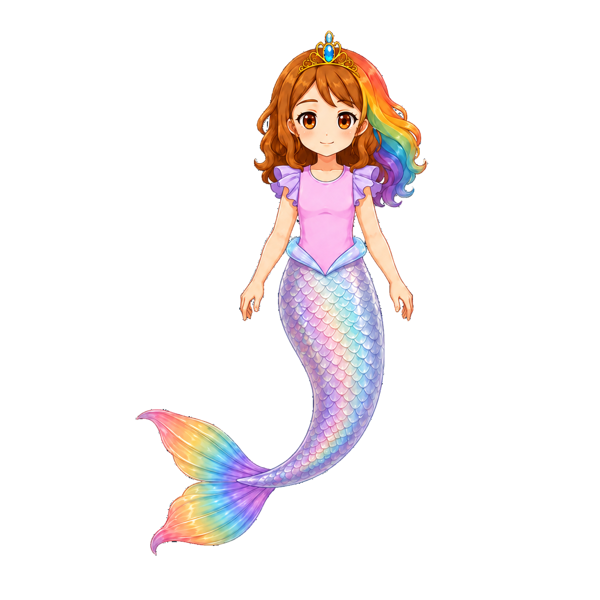
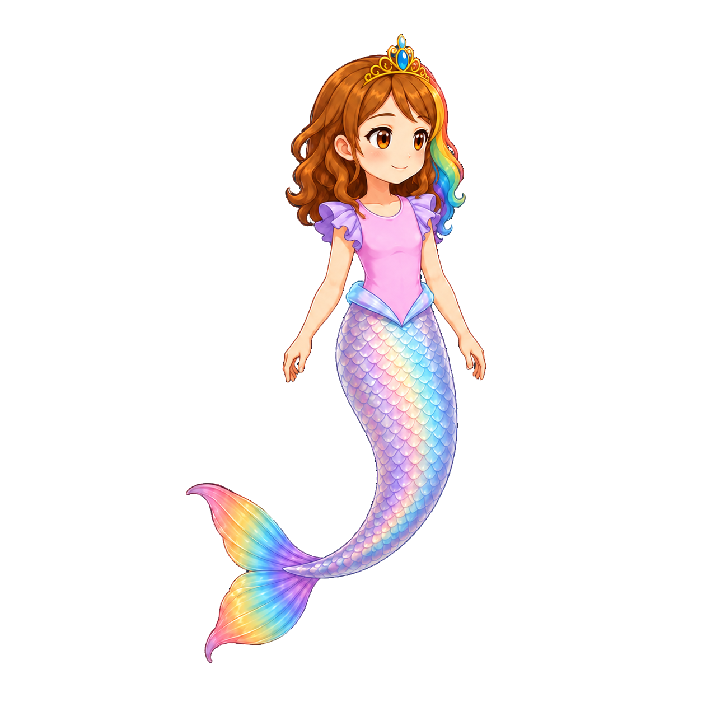
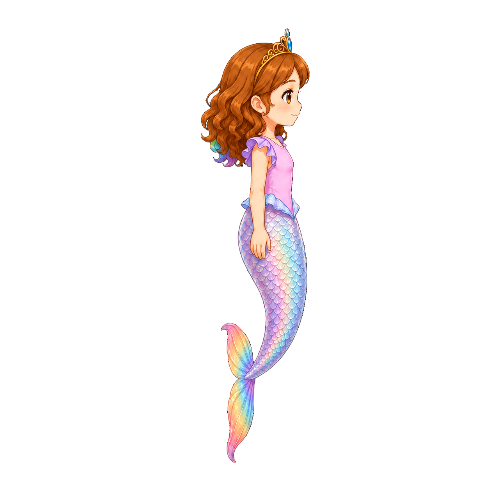
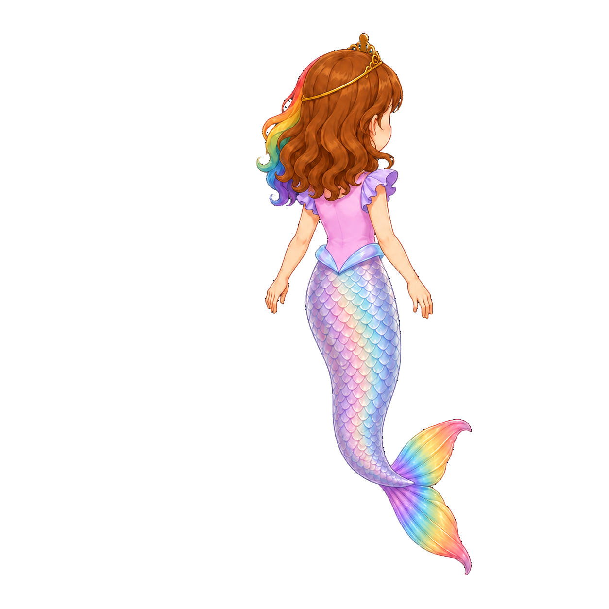
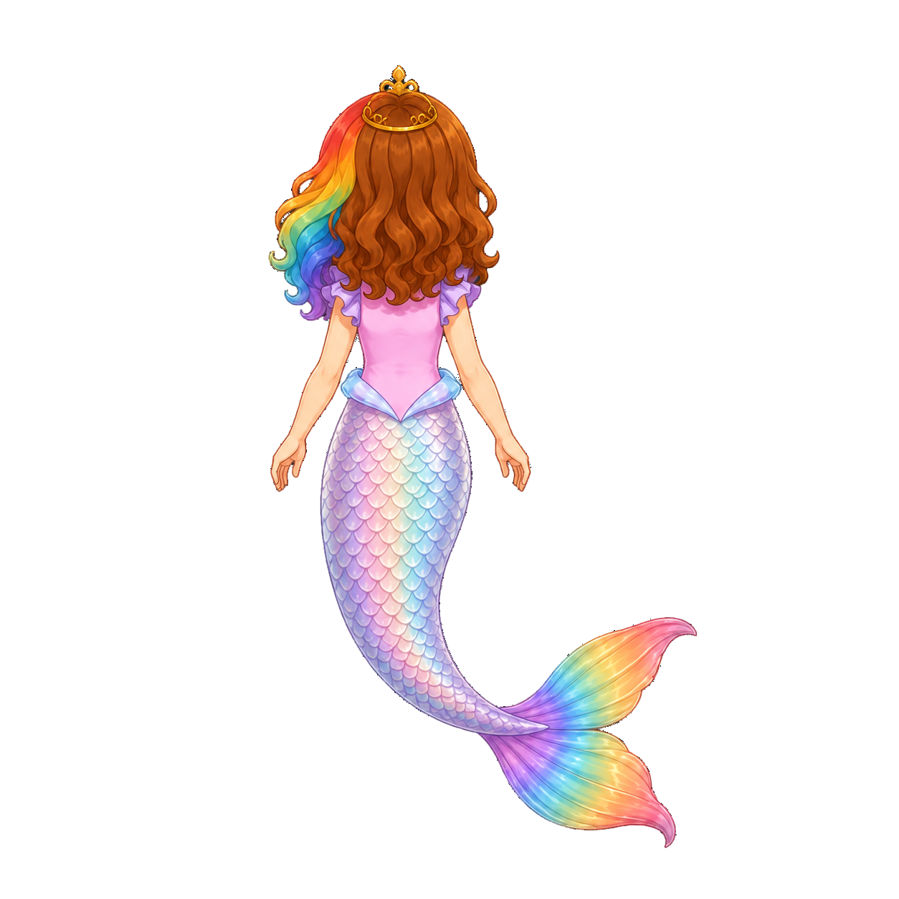
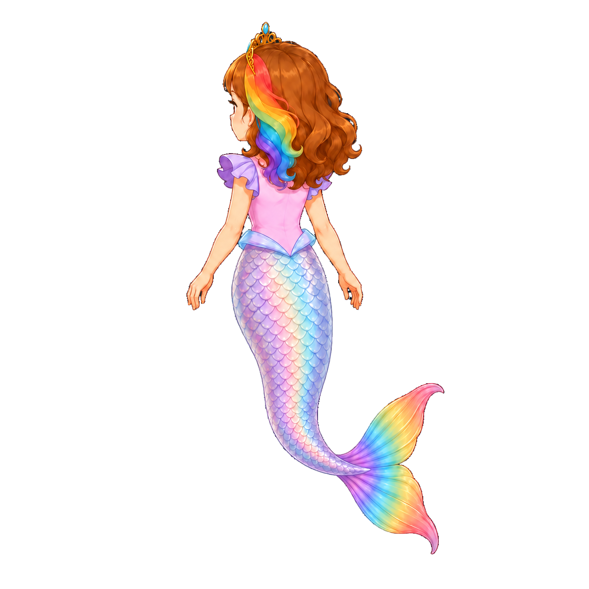
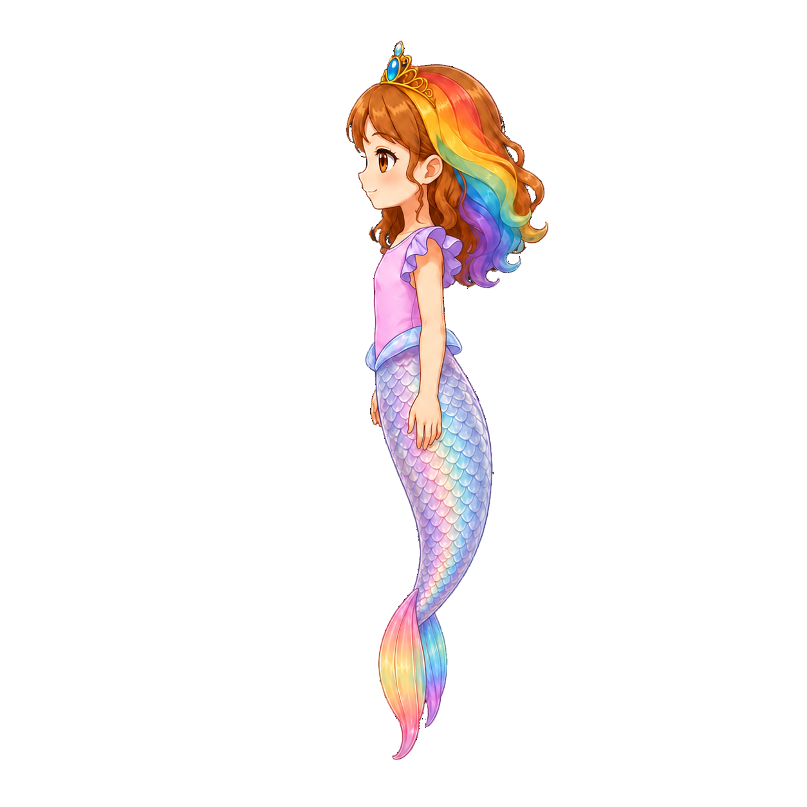
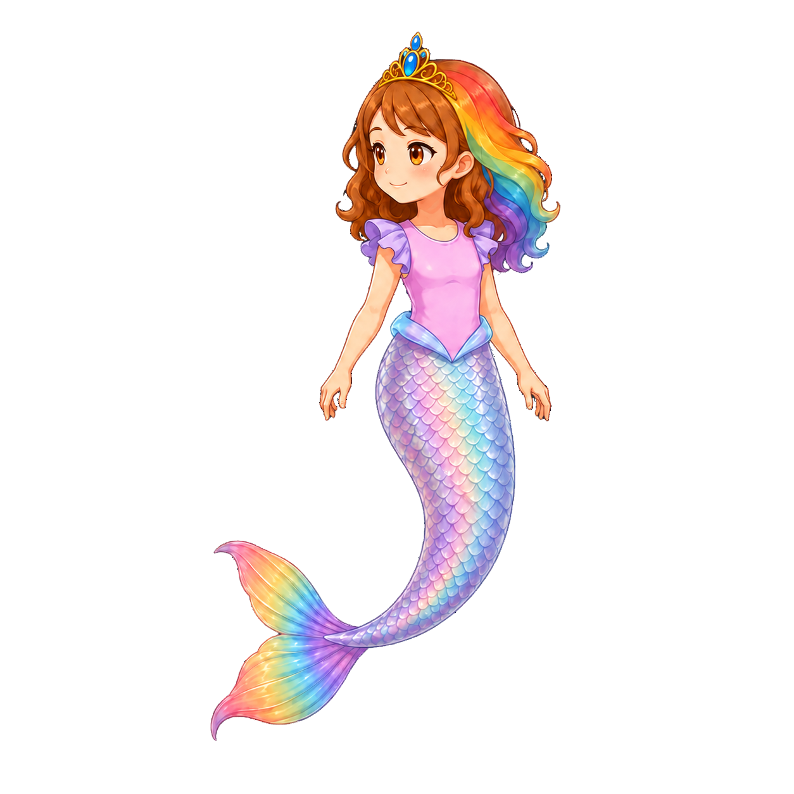

Motion-reference only. Exact opening layouts need human approval. Eight native videos requested; no scores or selections prefilled.
Video-first revision: RSW-01 is the only first job. Confirm actual video-tool access, attach the two exact inputs, then return and review one playable video before the other samples. No still-board fallback. Video operator / input links · Publication and readiness status
RSW-07–08 · right · pending opening approval 5839c5cef6948666984700fb73ed07a77a047f8ad0ae5c75b9e44a465557ae48
Identity and turnaround context
Rainbow streak belongs to her anatomical left. These thumbnails are source views, not temporal frames. Only the named two images are bound to each generation.

front

front-right

right

back-right

back

back-left

left

front-left
Shot and beat board
RSW-01 · Ribbon Glide: comfortable curiosity
Does a quiet, generous effort-and-glide phrase feel alive rather than limp?
pelvis starts at the opening position and travels about one quarter of the frame width right; no camera travel
0–1 secondsher eyes notice a point offscreen right; a small interested head turn follows, then the chest joins.
1–2.5 secondsshe inclines into a diagonal swim with one rounded tail stroke; elbows softly bend and relaxed palms sweep water backward, then recover closer to the body.
2.5–5.5 secondsshe glides right with quiet confidence; the curved tail unfurls into fin follow-through, the hands float to comfortable asymmetric balance, and the curls settle later than the head.
5.5–8 secondsshe eases to attentive buoyant stillness, a small warm smile and one natural blink; the tail catches up once without repeated bouncing.
End: Roshan is calmly attentive toward screen-right, hands relaxed and tail settled.
RSW-02 · Playful Dolphin: delighted departure
Can two contained propulsion beats express delight without frantic pumping?
same start, end, travel distance, scale and duration as RSW-01; vary effort and phrasing only
0–1 secondsher eyes notice the same offscreen-right point; her brows lift slightly and her expression brightens before her shoulders commit.
1–2.5 secondsshe gathers into a compact curved pose and opens into two quick, rounded tail efforts; one hand leads softly while the other balances, with moving elbows and wrists rather than straight outstretched arms.
2.5–5.5 secondsthe effort resolves into a buoyant rightward glide and a pleased chest lift; the broad fin trails each tail beat without folding into a ribbon, and her curls lag the acceleration.
5.5–8 secondsshe decelerates into the same attentive end position as the gentle version; one delighted smile resolves into calm availability.
End: Roshan is calmly attentive toward screen-right, hands relaxed and tail settled.
modest rightward travel; a readable slowdown during inspection; do not add a visible object or second character
0–1.5 secondsshe begins a relaxed rightward swim with a small tail stroke and soft asymmetric arm recovery.
1.5–3 secondsher gaze catches an unseen detail slightly above-right; the eyes stop first, the head tilts after them, and the chest eases while the tail continues to trail.
3–5 secondsshe makes one interested half-reach with the nearer hand, elbow leading and wrist following; the other hand gently sculls to balance, without detailed finger acting.
5–8 secondsa small satisfied smile says she has noticed enough; she lets the hand recover, redirects her gaze along her route and resumes one easy stroke into a quiet glide.
End: Roshan has resumed a relaxed screen-right glide with her attention ahead.
RSW-04 · Playful shallow bank: whole-body direction change
Can shoulders, hands and tail cooperate in a turn without a rigid flying silhouette?
one shallow downward-right arc, staying within the central safe area; no full spin, somersault or camera orbit
0–1.5 secondsshe notices a point slightly lower-right and glances toward it with a little anticipatory smile.
1.5–3.5 secondsthe head and chest lead one shallow bank toward that point; the nearer elbow bends and palm angles to steer, while the other arm opens a little for balance.
3.5–5.5 secondsher long tail follows the chest through a continuous curve and the fin arrives last; a rounded propulsion beat carries the bank into a gentle rightward glide, without rolling upside down.
5.5–8 secondsshe levels out, glances ahead with pleased concentration and lets both hands, fin and curls recover at slightly different times.
End: Roshan is level in a gentle screen-right glide, with a relaxed smile and clear arm silhouette.
RSW-05 · Are we playing? impatience turns to eager motion
Is the personality transition readable silently without anger or a prolonged frozen face?
supported waiting followed by short rightward travel; no angry pose, crossed-arm lecture or lip-synced dialogue
0–2 secondsshe waits buoyantly, mildly bored; her eyes drift toward the viewer, eyelids soften and one shoulder settles while her hands hang comfortably, not rigidly.
2–3.5 secondsshe raises one relaxed open palm a little, gives a small head tilt and lifts one brow as if asking whether play will begin; affectionate impatience, not scolding, no speech.
3.5–5 secondsher gaze suddenly catches the offscreen-right invitation; her eyes brighten and a genuine smile arrives before the chest opens and the tail gathers.
5–8 secondsshe commits to two eager rounded tail strokes into a rightward glide; the raised hand returns naturally to swimming balance, wrists and elbows moving, with hair and fin finishing the gesture.
End: Roshan is eagerly gliding screen-right with bright eyes, a warm smile and relaxed recovering arms.
RSW-06 · Considerate arrival: ready to help
Does deceleration make the hands available for useful action instead of leaving her in a flying pose?
same approximate travel distance as RSW-01; explicit slowing before the offer; no fabricated prop contact
0–1.5 secondsshe looks toward an unseen destination at screen-right and inclines into a purposeful, quiet swim.
1.5–4 secondsone rounded tail effort carries her right; elbows flex and relaxed palms recover with water resistance, while the chest remains readable and the gaze stays on the destination.
4–6 secondsshe decelerates with a gentle tail counter-sweep and small balancing palm motion; the torso becomes more upright as the tail catches up, without a sudden stop or size change.
6–8 secondsshe offers one open hand toward the destination, looks from it to the unseen recipient, then waits with a small reassuring smile; no object appears and no contact is claimed.
End: Roshan waits upright and buoyant near screen-right, offering one relaxed hand and an attentive smile.
RSW-07 · Ribbon cruise: two genuine three-second cycles
Can a repeatable base swim retain breathing room and articulated arms without obvious resets?
in-place against an implied current for extraction, stable average pelvis location and camera; local body wave and articulated arms must still read as swimming
0–1 secondsshe eases from the opening hover into a comfortable diagonal screen-right swimming posture.
1–4 secondsperform the first complete three-second swim phrase against a gentle implied current: soft elbow-and-palm scull with a rounded torso-to-tail propulsion wave, followed by a longer glide and relaxed recovery; the broad fin follows late.
4–7 secondsperform the same full three-second phrase a second time continuously, passing through the same pose, stroke phase and speed at the join; do not reverse time, insert a hold, duplicate the rendered first cycle or reset her body.
7–8 secondscontinue the natural glide and recovery beyond the second cycle so the editor has motion handles.
End: Roshan continues the easy screen-right-facing cruise with uninterrupted recovery motion.
RSW-08 · Eager cruise: two genuine three-second cycles
Can paired strokes feel eager but remain sustainable and pleasant when repeated?
same framing, average pelvis position and viewing angle as RSW-07; in-place loop study, not a claim of measured world propulsion
0–1 secondsshe eases from the opening hover into the same diagonal screen-right swimming posture as the gentle loop, with alert eyes and a small warm smile.
1–4 secondsperform one complete three-second phrase against a gentle implied current: two compact, rounded tail pulses with softly alternating elbow and palm recovery, then an easy buoyant glide; do not lock either arm straight.
4–7 secondsperform a second complete three-second phrase with the same effort pattern, pose phase and speed at the join; keep the gaze purposeful and the smile restrained, without repeating a large facial gag or reversing time.
7–8 secondscontinue the glide and relaxed arm recovery naturally beyond the second cycle, letting fin and curls trail the body.
End: Roshan continues the lively screen-right-facing cruise with uninterrupted recovery motion.
Board is for human comparison and beat order only. Do not upload it as an image-generation input.